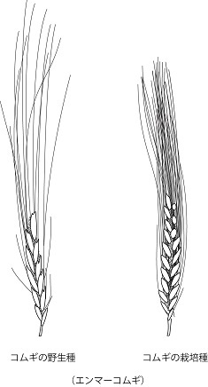

| シャムス教授の考古学入門 SECTION 3 (知は力なり！シリーズ) | |
| 三宅 美穂 | |
| etwas Neues (2016) | |
シャムス教授の考古学入門 SECTION 3
狩猟・採集から農耕・牧畜へ

Vivat academia! vivat professores!
vivat membrum quodlibet!
vivant membra quaelibet!
semper sint in flore!
アカデーミア万歳！教授達万歳！
どの学生も万歳！
すべての友人も万歳！
彼らみな常に華の中にあれ！
考古学の世界へようこそ
過去に想いを馳せ、過去と対話する考古学。だれもが一度はなってみたいと思うあこがれの職業のひとつかもしれません。ただし、それは映画の中や物語の中でしか知らない職業でもあります。本書は実際に考古学に長年携わってきた方々による、考古学の魅力を伝える入門書です。
シリーズ「シャムス教授の考古学入門」はガイダンスと４冊（４セクション）からなります。各セクションを解説してくれるのはネコのシャムス教授です。シャムスとはアラビア語で太陽のこと。生まれながらに太陽のもとで発掘作業に携わる（！）教授の講義をお楽しみください。
講義を受講するのはあんずさん、そしてぽんたくんです。さっそく受講証を発行しましょう。

現在、本講義では学生募集中です。ペットの写真と一緒に、シャムス教授への「考古学」に関する質問をお待ちしています。これは！という質問は、シャムス教授の回答つきで次号に掲載されます。
＊＊＊＊＊＊＊
SECTION 2を受講した方から質問がきています。
まずは、カメ吉さんから
①カメでも考古学を勉強させてもらえますか？
②勉強した後に就職できますか？ どんな進路があるのでしょうか？

まず、カッツェン大学の本特別講義はどなたでも受講していただけます。ゆっくり取り組んでください。カメさんはゆっくりでしょうが、コツコツと地道に歩むでしょうから、考古学に向いているかもしれません。自分のペースで勉強してください。
就職については、ちょっと耳の痛いところです。ぼく達の先生の時代から就職は課題のひとつでして、大学院に入って、先生について一緒に何年も現場に出て、便利に先生に使われ、こちらもついおもしろさに魅せられて、いつまでもそこで没頭していると（なにせ時間のかかる学問ですから、ひとつの現場でも数年があっという間に過ぎてしまいます）、歳ばかりとってしまって、就職できないなんてことになるわけです。
日本が高度成長期にあった頃には各地で盛んに発掘が行われており、各県では埋蔵文化財センターを設置して対応していましたので、考古学を修学した者の多くはそうした組織に就職することができました。今では、同様の大規模な組織が存続しているところは少なくなってしまいました。
当然、国、県、市町村の公共機関の中には、文化財を扱う担当部署がありますので（博物館や美術館も含まれます）、公務員となってそうした部署への配置を希望することもできますね、希望が通るかどうかは保証がありませんが。
日頃から勉強し、研究を重ね、論文を執筆し、研究会で発表し、真面目に学問に取り組んでいる若い研究者の方々が、せめてその実力に応じて就職できるようになることを念じてやみません。
（SECTION 2の質問コーナーは巻末につづきます）
本書 の質問とペットの写真はこちらまで：etwasneuesbooks@gmail.com
- この本は横書きでレイアウトされています。
- また、ご覧になる環境により、表示の差が認められることがあります。
- 本作品では、ルビが（ ）内に表示されています。
SECTION 3
考古学の世界－狩猟・採集から農耕・牧畜へ－

皆さん、こんにちは。『考古学の世界』の第3回目の講義です。今回は、狩猟採集を中心とした生活様式から、動物や植物を自ら育て、それを食糧として利用するようになる、その歩みについて、考古学からこれまで分かっていることを紹介したいと思います。野生の動植物に依存する生活から、食糧を自ら生産するという生活への変化は、その後の社会の発展にとても大きな影響を与えるものでした。新石器時代に起こった革命的な出来事ということで、「新石器革命」とさえ呼ばれています。
狩猟採集生活
前回（SECTION 2）、『人類の進化』についての講義でもお話しましたが、人類が登場してからおよそ600万年の歴史があります。現在までのほとんどの期間、人びとは自然に存在する野生の動植物を食糧として生き延びてきました。草、木の実、根菜、哺乳動物、魚、貝、鳥、昆虫など、身近にあるものを求めて食糧としてきた長い歴史です。
狩りに必要な道具は、考古学で確認できるものとしては、槍や弓矢、紐をつけて飛び道具としたとみられる投弾などがありますが、当然、遺物としては残らないような木製品、革製品などさまざまな道具が用いられていたはずです。
ホモ・サピエンスの前に主に生息していたホモ・エレクトスの時代にはすでに火を使うことができましたので、獲得した食糧を焼いたり、燻したりといった加工もしていたことでしょう。このように、長い歴史の中で、人びとは、狩猟採集する際の技術や道具を発達させ、またそれらの食糧をある程度保存する技術も経験から獲得していたと思われます。

狩猟採集民というと、いつもお腹をすかせながら、食糧を求めてあちらこちらをさまよい歩く人たちというイメージがあるかもしれません。しかし、こうしたイメージは、実際の狩猟採集民の姿と必ずしも一致するものではないことが分かってきました。

定住化
人類は長い間、住む場所を頻繁に移動させながら生活してきました。こうした生活のことを定住に対して「遊動」と呼んだりしますが、類人猿も遊動生活を送っていますので、人類も類人猿から受け継いだのかもしれません。
たいへん寒かった最後の氷河期が終わると、世界の各地で定住集落が見つかるようになります。日本列島でも、縄文時代のはじめには竪穴住居や貝塚など同じ場所に長く住んでいたことを示す遺跡がでてきます。
ぼく達が調査している西アジアでは、今から1万5千年ほど前に石壁をもつ竪穴住居がいくつも集まった定住集落が出現します。ただ、遺跡から見つかる動植物は、まだ野生のものばかりですので、定住狩猟採集民の遺跡ということができます。
定住となると、家財を持ち運ばなくていいのですから、住居も道具類も、大きく、重く、いろいろなものを多く持つことができるようになります。人が移動しなくてよいことも、食糧が許す限り人口増加を促したことでしょう。ものを保存できることも利点のひとつです。富を蓄えることは、その富を別の目的のために使うこともできます。
このように、狩猟採集から農耕牧畜への過程の中で、まず定住化という大きな変化が起こります。狩猟採集民が定住した後で、農耕牧畜が始まりますので、定住化は、農耕牧畜の始まりにとって、大変重要だった可能性があります。
豊かな狩猟採集民
エジプトのピラミッドが奴隷によって作られていたのではなかったように（そう、出勤簿や二日酔いで仕事を休んだといった記録が発見されています）、狩猟採集をして暮らしていた人たちの生活が貧しかった、苦しかったというイメージも、どうも間違っているようです。
現在でも僅かながら残っている狩猟採集民の生活を実際に観察したところ、1日のうち数時間しか食糧を得るために働かず、あとはおしゃべり、昼寝、ダンスなどに興じていることが分かりました。物質的には質素ですが、生活の質としては、かなり豊かな生活をしていると言えそうです。
「いつも飢えに苦しんでいる人びと」というイメージは、農耕民の偏見が生みだしたものなのかもしれません。
さらに驚くべきは、農耕の知識があっても、あえて農耕をおこなおうとしない人びとの存在でした。なぜ農耕をしないのかと聞いたところ、「こんなに食料があるのに、どうしてそんなことをする必要があるのか」というものだったといいます。もともと人間はなまけものなのでしょうか。

きっと一年を通して、食べ物に困らないのでしょう。つまり、年間を通して豊富な食糧資源がある場合には、狩猟採集で何の問題もないのです。狩猟採集のメリットは、食糧が必要になったら、みんなで取りに行けばいいのであって、動物や植物の世話をしなくていいことでしょうか。デメリットは、気候や病気など不測の事態による食糧不足が起きたときに、場合によっては餓死する危険があることです。

- 人類は自然に存在する、身近な野生の動植物を食糧として長い間生き延びてきた。
- 人類は、狩猟採集する際の技術や道具を発達させ、また、食糧を火を用いて調理したり、さまざまな方法による保存の技術も経験から獲得していたと思われる。
- 人類は長い間「游動」生活を送ってきたが、最後の氷河期が終わった時期に、世界の各地で定住集落が見つかるようになる。
- 西アジアでは、狩猟採集民が定住した後で、農耕牧畜が始まる。定住狩猟採集民が築いた石壁のある竪穴住居が発見されている。日本でも同様の過程がみられ、縄文時代には竪穴式住居がある。
- 狩猟採集民は、思いのほか、豊かな生活を送っていた可能性がある。しかし、年間を通して豊富な食糧資源がある場合には、こうした生活は維持されるが、気候異常などの影響による食糧不足が生じた際には、餓死する危険もあった。
農耕牧畜生活
狩猟採集生活がなかなか快適な暮らしを保証してくれるのなら、なぜ植物を栽培し、動物を飼育し始めたのでしょうか。
野生の動植物についての知識は、当然、長い経験のなかで獲得されていたでしょうが、それらを総動員して動植物の世話を始めたのは、何がきっかけとなったのでしょうか。身近な自然環境が豊かで、動植物が常に豊富にあれば、こうした変化は起きなかったかもしれません。
そうしたことも単発ではあったことでしょうね。これまでも、気候が大きく変化して環境が変わったため、人口が増えたため、定住を始めたためなど、そうせざるを得ないストレスがあったという立場からさまざまな説が唱えられてきました。
中には、饗宴を催してご馳走し自慢したかったからだとか、お酒を造りたかったからなど、といった少し変わったおもしろい意見もありました。実際、栽培や家畜を始めた動機は、地域や集団によって、同じではなく、それぞれに違うものであったのかもしれません。
なんらかの理由によって、栽培・家畜の試みが開始されますが、いくら動植物の知識が蓄積されていたからといって、最初それは容易でなかったことが予想されます。
動物を飼育するには、その世話を日常的に行う必要がある上、柵などによる囲い場や小屋などを作り捕食者から守る必要もあります。植物にしても、同一の場所に同じ作物ばかりを植えると、収穫量が減少したり、土地が疲弊してうまく育たなくなってしまいます。
野生種から栽培・家畜種への移行は、もちろん時間がかかります。野生であったものを家に持ち帰って世話をしたとしても、その日を境に外見なり、中身が急に変化するわけではないからです。しばらくは、野生の動植物と変わらないものを育てる時期が続いたと思われます。
こうした試行の期間がどれほどあったのかは推測するしかありません。当然、身近に野生種が存在しているかどうかも重要です。それが見つけられなければ、こうした試みも始まりませんからね。
しかし、いったん栽培家畜化が成功し、安定的な食糧生産が可能になると、始めた動機はどうであれ、生活の他の部分にも変化をもたらすことになります。人びとが定住し、栽培・家畜を行う体系を整え、人口が増加してくると、計画的な食糧生産にますます依存するようになり、逆もどりは難しくなっていきます。
ときには、土地の過剰利用による荒廃などさまざまな予期せぬ事態に見舞われながらも、人びとはこのような農耕を続け、社会体制を複雑化させながら、集団から集落へ、集落から町へと規模を増大させ、やがて多くの人口を抱える都市にまで成長する道筋をつけることを可能にしました。
- 植物の栽培、動物の飼育のきっかけは、気候変動による環境変化、人口増、定住開始のため、など所説ある。
- 野生種から栽培・家畜種への移行は、時間がかかるが、いったん栽培家畜化が成功し、安定的な食糧生産が可能になると、人口が増加し、計画的な食糧生産にますます依存するようになり、狩猟採集に基づく生活への逆もどりは難しくなっていった。
- 西アジアの人びとは、農耕を続けながら、社会の体制を複雑化させ、集団から集落、町、都市へとその規模を増していった。
西アジアにおける栽培家畜化の始まり
動物
石灰岩地帯が広がる西アジアでは、一般に土壌がアルカリ性であるため、人骨も含め動物の骨は非常によく保存され、遺跡から多く出土します。
食糧ではなかったと思われますが、イヌは最初に家畜化された動物で、1万3千年以上前から人とともに埋葬された例が発見されています。西アジアで狩猟対象であった動物は、ヤギ、ヒツジ、ウシ、イノシシ、ガゼル、シカ、キツネ、ウサギなどで、他にもさまざまな種が見つかっています。小型の動物としては鳥類や魚類・貝類も含まれています。
動物飼育の結果と考えられる形態的変化が観察されるようになるのは、約１万年前のことであり、ヤギ、ヒツジ、次いでウシ、イノシシが対象になったようです。
こうした家畜化が始まって間もない頃に、家畜からミルクを搾ってさまざまな乳製品を作り出し、肉以外にも、いや、むしろ肉以上に有効に動物を活用する術を発達させていたとの興味深い指摘もなされています。食糧という面だけでなく、生活で利用できる皮や腱、それに骨、肥料や燃料として糞、労働力を提供するものとして重要なものであったと考えられます。
植物
西アジアで採集されていた植物は、マメ類、ムギ類、木の実（アーモンド、ピスタチオ、エノキ、ブドウ、イチジクなど）などです。もちろん食糧以外にもマットやカゴ製作のためにつる性の植物や水生植物なども採集されたことでしょう。

栽培化で最も重要なのは、主食となるムギ類ですが、栽培化による変化が比較的分かりやすく、1万年ほど前からの栽培開始が観察されるようです。
ムギ類は栽培された最初の植物と言われており、その野生種が自生するのは、地中海の東海岸からトルコ東南部、イラク、イランにかけて弧を描く地域、「肥沃な三日月地帯（Fertile Crescent）」と呼ばれる場所です。
遺跡から大量に発見されるものに、石製の製粉具がありますが、これはムギを挽いて粉にし、おそらくパンのようなものを作っていたと考えられています。
ムギ類とともに、同様の地域において、マメ類も早期から栽培が行われたと考えられる植物です。畑に同じ作物を植えると、徐々に土地が痩せて、収穫量が減ってしまいます。ムギ類は特にその傾向が強いのですが、ムギの後にマメ類を植えると、そうした障害が弱くなることが知られています。もしかすると、昔の人もそうしたことを経験的に知っていたのかもしれません。
＜動物＞
- イヌは最初に家畜化された動物で、1万3千年以上前から人とともに埋葬された例が発見されている。
- 西アジアで狩猟対象であった主な動物は、ヤギ、ヒツジ、ウシ、イノシシ、ガゼル、シカ、キツネ、ウサギなど。さらに小さな動物としては鳥類や魚類・貝類。約1万年前には、ヤギ、ヒツジ、ウシ、イノシシ（ブタ）などに動物飼育の結果と考えられる形態的変化が生じた。
- 家畜化が始まって間もない頃、家畜からミルクを搾ってさまざまな乳製品を作り出し、有効に動物を活用する術を発達させていたという指摘もある。また、食糧という面だけでなく、生活で利用できる皮や腱、それに骨、肥料や燃料として糞、労働力を提供するものとして重要であったと考えられる。
＜植物＞
- 西アジアで採集されていた植物は、マメ類、ムギ類、木の実など。
- ムギ類は、栽培された最初の植物と言われており、その野生種が自生するのは、地中海の東海岸からトルコ東南部にかけて弧を描く地域、「肥沃な三日月地帯（Fertile Crescent）」と呼ばれる場所である。
- 多くの石製製粉具の発見から、ムギを挽いて粉にし、おそらくパンのようなものを作っていたと考えられている。
- マメ類も早期から栽培が行われたと考えられる植物で、ムギの後にマメ類を植えると、土地がやせるといった障害が弱くなることを、当時の人間も経験的に知っていたのかもしれない。
日本
弥生時代に水稲栽培が大陸から伝えられたことは学校で習ったことと思います。弥生時代の前の縄文時代についてはどうでしょう？栽培が伝わる前なのだから、狩猟採集に忙しかったのでしょうか。
先日でもお話ししましたように（SECTION 1）、近年、縄文時代の大規模な集落が発見されるなど、縄文時代のイメージは刻々と書き換えられています。それによると、縄文時代が狩猟採集、弥生時代が農耕というようにそれぞれ異なる生活様式を持っていた、と単純には言えなくなってしまったようです。縄文時代においても、人びとはより効率的に動植物を利用できるように、それらを身近に置き、ときに育てることもしていたのではないか、と解釈できるような発見が続いています。
縄文時代の植物利用
植物で言えば、水稲耕作は縄文時代の終わりのころには農耕に関連する道具や水田の跡の存在からも示されるように、すでに行われていました（これを弥生時代に含めようという考えもあります）。さらにそれ以前にも、水田を必要としない畑作や湿地を利用した稲作が行われていた可能性も指摘されています。
稲以外では、マメ科の植物が形態変化を起こすほどに栽培化が進んでいたことが主張されています。また、ドングリはあく抜きの作業を必要としますが、あく抜きをしなくてもよいクリが集落周辺に意図的に植えられていたと想定できる状況が報告されています。
遺跡に人が住むようになると、クリの花粉の割合が急増する例や、実際にクリの木の株跡がまとまって発見された遺跡が見つかっています。縄文時代の植物性の食糧は、ドングリ、クリ、クルミ、トチなどの木の実やイモ類、マメ類などが主なものであったようです。
食糧以外にも、クリの木は建築資材としても利用されています。また、ヒョウタンや漆の木についても栽培化されていたことが指摘されています。野生のつる性の植物は、精巧なカゴを編むのに使用されました。
7,000年前の遺跡から奇跡的に発見された大量のカゴによって、これらが日常的に使用されていたことが証明されました。この発見は、地中の貝と土と水の成分が偶然にもこうした植物性の遺物を保存するのに適した環境を作っていたからこその奇跡的なものでした。
動物
縄文時代、イヌやタヌキなどの動物が、人とともに埋葬されている例があります。おそらくペット、もしくはイヌについては狩りに役立つ相棒だったと想定されます。弥生時代には、イヌの骨はバラバラの状態で見つかることが多いため、食糧でもあったとも言われています。
イノシシ（ブタの祖先種）については、離島や北海道など本来生息していないはずの場所から骨が見つかっていることや、イノシシとシカはどちらも盛んに狩猟されているのに、イノシシを表現した土偶だけが多く発見されていることなど、イノシシが身近な存在であったことを想起させるとして、家畜化されていた可能性を唱える研究者もいます。
動物性の食糧としては、野生のイノシシ、シカを中心に、集落のあるそれぞれの環境に応じて異なる動物（クマやムササビ、イルカやクジラなど）を入手していました。また鳥や魚、貝もよく発見されます。貝殻がたくさん捨てられた貝塚は、人骨を始め、さまざまな遺物を見つけることのできる貴重な遺跡ですが、また文字通り、大量の貝が食べられていたことを物語る証拠でもあります。
弥生時代のイノシシは、骨に家畜特有の形態的変化や歯槽膿漏など人為的環境下に置かれていたことを示す病変の痕などが見られることから、大陸から稲とともに日本にもたらされたのではないかという意見があります。しかし、DNA研究によると、ブタと認定されたものの中にも元々日本列島にいた在来種の遺伝子をもつものも含まれるそうで、話はそう単純なことではなさそうです。縄文時代にすでに家畜化の試みがなされていたとする見解が支持される可能性もありそうです。

日本においては、有機物が保存され発見される機会が極めて少なく、また、火山の噴出物を起源とする酸性土壌が広がるため、酸の作用で動物骨が溶けてしまいなかなか残りません。こうした条件が、骨などの研究を難しくしています。
その反面、湿地帯などでは、水によって、腐敗が進まず植物が残ることもあります。当然、出土箇所や出土数が多ければ、仮説の検証がより容易であり、より確実な過去を復元できることになるのですが、残念なことです。
- 狩猟採集の時代と言われてきた縄文時代においても、動植物を身近に置き、ときに育てることもしていた、と解釈できるような発見が近年続いている。
- 縄文時代には、水田を必要としない畑作や湿地を利用した稲作が行われていた可能性もある。
- 縄文時代の植物性の食糧は、ドングリ、クリ、クルミ、トチなどの木の実やイモ類、マメ類などが主なものであったようである。
- 食糧以外にも、クリの木は建築資材としても利用され、ヒョウタンや漆の木についても栽培化されていたことが指摘されている。野生のつる性の植物は、精巧なカゴを編むのに使用された。
- 縄文時代、イヌやタヌキなどの動物が、人とともに埋葬されている例がある。
- 動物性の食糧としては、野生のイノシシ、シカを中心に、集落の 環境に応じてさまざまな動物を入手していた。また鳥や魚、貝もよく発見されている。
- 弥生時代のイノシシは、大陸から稲とともに日本にもたらされたのではないかという意見があるが、元々日本列島にいた在来種の遺伝子を持つものもいる。縄文時代にすでに家畜化の試みがなされていたとする見解が支持される可能性もある。
野生種と栽培家畜種との違い
あんずさん、とてもいい質問です。少し長くなりますが、しばらく辛抱して聞いてください。
先ほども述べましたように、野生種から家畜栽培種に移行するには、時間がかかります。野生種も、ものによっては、すぐに変化が現れるものもあれば、なかなか変化しない、もしくは変化後にまた野生種に戻ってしまうものなどさまざまで、しっかりと家畜栽培種と認識される変化が観察されるようなものになるまでには、しばらくの時間が必要となります。
人びとは、動植物の中から突然変異などによって、世話しやすくなった個体を見つけ、それを優先的に栽培飼育することで、効率的に利用できるような動植物へと改良していき、比較的密集した範囲において、多くの生産を得ることを目指しました。
こうした試行錯誤を繰り返しながら徐々に軌道にのせ、本格的な栽培・家畜が行われるようになったと考えられます。数十年から200～300年ほどで栽培種が畑に定着するというシミュレーションもあるようですが、遺跡から実際に発見された植物を時間を追って観察すると、栽培種が野生種に完全に置きかわるのに、数千年もかかっているとの研究もあります。野生種と栽培種は、長期間同居しながら、時間をかけて徐々に、移行していったようです。
それでも、研究者の地道な研究によって、野生種とは異なる特徴が明らかにされ、それらを元に、遺跡から発見される手がかりが調査されます。しかし、もちろん動物、植物ともに、飼育や栽培化による変化が出土したものから把握しにくい、もしくは把握できないものも多くあることも想定しておかなくてはなりません。
動物においては、家畜化によって基本的には小型化するため、野生種との区別がなされます。
家畜化されると動物は大型化すると誤解されることがよくありますが、実際には小型化しています。その理由については、家畜の群れが成立すると他の集団とは交流がなくなるため、遺伝子の近い者同士が交配することになり、結果として小型化するという説明がありました。
今では飼育する人間の側の都合により、扱いやすいおとなしい個体（＝小さいことが多い）を選択的に育てたためではないかという考えが有力になっています。こうした動物の骨に向き合い研究する学問を動物考古学と呼んでいます。
動物の骨の形の変化だけでなく、骨から年齢を推定し、その割合を明らかにしたり、雄雌の比率などさまざまな傾向を分析し、動物利用のあり方を探っていきます。小型化した家畜が時間をかけて徐々に割合を増し、狩猟による野生種より大きな割合を占めるようになり、食糧獲得において重要な役割を果たすようになっていく、その過程を解き明かします。
ですから、動物考古学の研究者は、動物の骨のことをよく知っていなければなりません。一番頼りになるのは、やはり本物の動物の骨です。彼らは、発掘の現地にいても、比較用に地元の動物の骨のサンプルを入手しようと努力しています。肉屋さんに行って骨をもらってきたり、近所の人に頼んで動物を入手したり、それは大変です。
ある日、発掘現場にふらりと現れた犬が動物考古学者に近寄っていくと、別の研究者が「骨にされちゃうよ〜」なんて冗談を言っていたのを思い出します。みなさん、大丈夫です、逃げ出さないでください。
植物においては、栽培化の過程で熟しても種子が落下しない変わり者が突然変異として出てきます。水田の稲も秋になって実っても、種子が落下しませんよね。むしろ、バラバラと落下されてしまっては、収穫の作業が大変なことになってしまいます。でも野生の状態でも種子が落下しないとどうなるでしょうか。種子は立ち枯れてしまい、翌年発芽することができません。栽培作物は人間にとっては都合のいい性質をもっていますが、人間の助けなしでは育っていけない存在でもあるのです。

また、他にも発芽の時期が均一的になったり、種子の形態変化などの特徴によって、野生種と区別されます。このように植物を対象にした学問を、植物考古学、または古民族植物学などと呼ぶこともあります。
植物の痕跡は、主に土中から見つかる微小の炭化した破片です。それらを採取するには土を水をはったドラム缶などに入れ、浮力によって水面に現れる破片をすくい取り、乾燥させ、顕微鏡などで観察して、種を特定します。

動物の骨も同様ですが、もちろん、完全な形で残っていることは稀であり、種を特徴付ける部位や栽培種かの判断可能な部位などを根気よく探し出し、観察するという大変な作業を経て、研究がなされます。
＊＊＊＊＊＊＊＊＊
このように植物や動物の利用については、遺跡から出土するそれらの痕跡（炭化した種や植物片、骨など）を研究しますが、最近では、土器や石器に残る脂質やでんぷん粒などを抽出し、分析する技術も発達してきており、いろいろと興味深い結果が得られています。道具をどういった目的で、どのように使用したのか、民族例や状況証拠からだけでない、具体的な説明が可能な状況となりつつあります。
- 人びとは、動植物の中から突然変異などによって世話しやすくなった個体を見つけ、それを優先的に栽培飼育し、効率的な利用を目指した。
- 野生種と栽培種は、長期間同居しながら、時間をかけて徐々に、移行していったようである。
- 動物においては、家畜化によって基本的には小型化する。飼育する人間の側の都合により、扱いやすいおとなしい個体（＝小さいことが多い）を選択的に育てたためではないかという考えが有力である。
- 動物考古学は、動物の骨の形の変化だけでなく、骨から年齢を推定し、その割合を明らかにしたり、雄雌の比率などさまざまな傾向を分析し、動物利用のあり方を探っていく学問である。
- 植物においては、稲のように栽培化の過程で熟しても種子が落下しない種が突然変異として出てくる。他にも、発芽の時期が均一的になったり、種子の形態変化などの特徴によって、野生種と区別される。
- 植物や動物の利用については、遺跡から出土するそれらの痕跡（炭化した種や植物片、骨など）を研究する。最近では、土器や石器に残る脂質やでんぷん粒などを抽出し、分析する技術も発達してきている。
今回とりあげた狩猟採集から家畜栽培への変化は、いわゆる新石器時代に起こったことです。
そうですか、そうですね。なにせ『石器』時代という名称ですから、そのようなイメージをお持ちであった方も多いかもしれません。
メソポタミア文明と呼ばれる文明が起こるまでは、とても原始的な生活であったのだと。新石器時代は土器が登場する時期でもありますが、今日お話ししたような変化は、新石器時代でも土器が出現する1,500年ほども前のことになります。定住、食糧の生産など、さまざまな変化が起こり、人びとの生活を変えていった時代でありました。
次回は、先ほども触れましたが、動物のミルク利用について、取り上げたいと思います。ぼくがいろいろとお世話になっている考古学の先生をお招きし、講義をしていただきます。お楽しみに。ミルク、美味しいよね。喉乾いた。

SECTION 2 質問コーナー
教授！
お忙しいところすみません。SECTION 2では人類の進化についていろいろと教えていただきましたが、一般の方々からの質問や感想がいくつかありましたので・・・ひきつづき回答お願いします！
まずはお手紙紹介。
Dear Dr. Shams,
I'm interested in Ancient life.But I didn't have studied about Archaeology, because I felt difficult it. l want to know more Ancient life by your this lecture. I'm going to be 60-year-old soon, but, I think to don't too late to start a new thing. Do you think so?
Best Regards,
Mitsuhiro
JAPAN
シャムス教授へ
古代の生活に興味があります。ただ考古学は難しいと思って、勉強したことがありません。教授の講義でもっと古代の生活について知りたいんです。もうすぐ私は60歳なのですが、新しいことを始めるのに遅くはないと思っています。そう思いませんか。
ミツヒロ
日本
Dear Mitsuhiro,
Thank you for your concern to my lecture and the world of archaeology. Yes, you are right nothing to be late for anyone to start new things. Hope you could enjoy my next lectures and could go more deeper to ancient worlds!
Shams
ミツヒロさん
ぼくの講義や考古学の世界に関心を持ってもらってありがとうございます。そのとおりです、新しいことを始めるのに遅いなんてことはありません。次回の講義も楽しんで、もっと深く古代の世界へいらっしゃることを期待しています。
シャムス
こんにちは、シャムス教授。
人類／化石人骨のネーミングは誰がどう決めて、定着するのでしょうか？北京原人やジャワ原人は日本語名があるけど、その他のものはどうなのでしょうか？

Ms.なほこ（と、その取り巻きたち）
ゴージャスですね、なほこさん
人類学者が遺跡を発掘して、運がよければ人骨を発見することができます。Section 2でも述べましたが、ルーシーが話題となったのは、その全身の40％ほどの骨格が奇跡的にも発見されたためでした。通常は骨の一部が発見されるだけでも幸運な方です。
発見された骨はあらゆる手段を用いて研究されます。おおよその年代が求められ、骨の特徴が若干でも観察できれば、これまでに発見されてきた他の人骨資料と比較することができます。共通の特徴があれば、おそらく同じか近い種であろうということで、すでに知られている名前（種）の人類が「この地にも生息していた」として発表されます。
「似ているけれどちょっと異なる」となれば、大きな枠では同じ系統、つまり「亜種」として、発見された場所などの名前が付け加えられたりします。また、もし大きく異なる別の特徴が観察されたとなれば「新種」かもしれず、その場合は、どの系列に近いものかなどが議論され、発掘者によって地名などを付けた名称で発表されます。
しかし、骨は体の一部にすぎませんし、その骨でさえ一部しか見つからないのが普通です。毛や皮膚の様子など、多くの情報がすでに失われてしまっています。そうした中で人類のタイプを分けるわけですから、専門の研究者の間でも意見が分かれるのは当たり前です。結果として、当然、発見者とは異なる見解を唱える学者も現れます。
ですから、学者によっては、「いや別系統ではなくあの種に属するはず」とか、「全く別の種だろう」などなかなか定まるものではありません。年代からして、意見が一致するとは限りません。
同様の資料が多く発見され、特徴がある程度確実視され、ひとつの見解が学者間で大勢を占めて初めて、通称として一般に使われるようになります。しかし、こうした名称でさえ、その後の発見や研究によって、種の再編が行われ、使われなくなることもあります。
北京原人やジャワ原人は、発見された場所から通称としてこのように呼ばれてきました。日本に近いこともあって、興味をもって分かりやすい名称が与えられたのでしょう。話題になれば、ラミダス猿人やアファール猿人のように地名をとって紹介されます。
北京原人・ジャワ原人はともにホモ・エレクトスに属しますが、SECTION 2でお話しましたように、アジアのほうでは、その後、このホモ・エレクトスたちがどういう経過をたどったのか、その詳細はよく分かっていません。なにせ発見例が少ないから仕方ありません。
なほこさん、今後の調査に期待しましょう。
章さんから感想いただきました。ありがとうございます。
こんにちは、シャムス教授。
考古学はやや自分のフィールドに近いので楽しく一気に読めました。
以前、オルドバイ石器を握ったとき、自然と大きく振りかぶって何かを打ち砕きたくなる衝動に駆られました・・・ごく自然に。一見、ただの石ころ（最も古い石器ですから）ですが、そこには多くのＤＮＡが打ち込まれているのだと感じました。彼らがどのように握ったのか、指の跡を確実に感じました。それは掌に吸い付くようにしっとりとなじみました。
事実や数値を組み上げていく考古学もありますし、「やってみて」実証する実証考古学もありますが、私はインスピレーション考古学者（通称ペテン師）なのかも知れません。化石や矢じりなどを手にするとその時代にトリップします。
そういえば先日、「ルーシーは16ｍの高さから転落して短時間に死に至った」という論文が発表されていましたね。平原にでた民も、ときには木に登った。しかし、足や手はその昔持っていた「握る記憶」を失っていた。
「ミス」という過失は知恵が生み出すもの。大切な能力を知恵と引き換えたのでしょうか。ルーシーには近親感をもっていたので、少し悲しくなりました。
著者紹介
三宅美穂（みやけ みほ）
神奈川県生まれ。筑波大学第一学群人文学類（考古学専攻）卒業。英国リバプール大学考古・古典・オリエント学研究科修士課程修了。青年海外協力隊員としてヨルダン国立ヤルムーク大学考古学研究所に所属、遺跡発掘・遺物整理に従事。某市立博物館建設準備、民間考古関連会社での仕事を経て、現在、考古学者である夫が指揮する海外での発掘、遺物整理に時折参加しつつ、愛猫シャムスと楽しく暮らす。
シャムス教授
 植物の栽培や動物の飼育についてみなさん興味がわきましたか
植物の栽培や動物の飼育についてみなさん興味がわきましたか
あんずさん
人間はもう私のこと食べません？
ぽんたくん
まあ、そのときは戦うぜ＜編集＞
金矢 真美（かなや まみ）
東京生まれ。上智大学文学部ドイツ文学科卒業。教育出版社での文部科学省検定高校英語教科書の編集業務を経て、現在、シリア在住のGhaythaa DeebとIFサイトを立ち上げ、世界中の人たちと英語でおしゃべりをする場を運営、エトヴァス・ノイエスで電子書籍を制作・販売する。趣味は、気心の知れた人たちと楽しい時間を過ごすこと。
＜写真提供＞
- File:Tokyo_National_Museum,_Honkan_2010.jpg 14:58, 27 October 2016(UTC) License=CC BY-SA 1.0 （東京国立博物館）
- File:San_Bushman_rock_art_Perdekop_Farm_North_of_Mossel_bay.jpg 14:59, 27 October 2016(UTC) License=CC BY 2.0 （サン人が描いた洞窟絵）
- File:San_tribesman.jpg 15:00, 27 October 2016(UTC) License=CC BY-SA 3.0 （サン人）
- File:Takatsuki-archives-museum_3.jpg 15:02, 27 October 2016(UTC) License=CC BY-SA 3.0 （竪穴住居 高槻市）
- File:140715-baby-sloth-orphanage-rescue-vin_640x360_304699971673.jpg 15:03, 27 October 2016(UTC) License=CC BY-SA 4.0 （ナマケモノ）
- File:Pistachios_in_a_bag.jpg 15:04, 27 October 2016(UTC) License=CC BY-SA 2.5 （ピスタチオ）
- File:Tigris_River_At_Diyarbakir.JPG 15:05, 27 October 2016(UTC) License=CC BY-SA 2.5 （チグリス川）
- File:Toro_site_1.JPG 15:06, 27 October 2016(UTC) License=CC BY-SA 3.0 （登呂遺跡と水田）
- File:Figs.jpg 15:07, 27 October 2016(UTC) License=CC BY-SA 2.5 （イチジク）
- File:Acorn_(5273459605).jpg 15:08, 27 October 2016(UTC) License=CC BY-SA 2.5 （ドングリ）
- File:Frucht_der_Edelkastanie.jpg 15:08, 27 October 2016(UTC) License=CC BY-SA 2.5 （クリ）
- File:Squirrel_eating_nuts_in_the_park.JPG 15:09, 27 October 2016(UTC) License=CC BY-SA 2.5 （リス）
- File:Bottle_Gourd_Lagenaria_siceraria_var._gourda_瓢箪(ひょうたん).jpg 15:09, 27 October 2016(UTC) License=CC BY-SA 2.5 （ひょうたん）
- File:Senzan_Senkouji_3.jpg 15:10, 27 October 2016(UTC) License=CC BY-SA 1.0 （イノシシ像）
IFについて
2016年 ― 「もしわたしたちが一緒に何かを考えたら・・・」 シリアと日本、西と東のアジアの両端にあるふたつの国から、IFというサイトが誕生しました。読む人と書く人がお互いやりとりするなかで、物語、考え、趣味、意見などを世界中の人たちとシェアしながらの、読者参加型のサイトです。現在までに世界２００地域の人たちがアクセスしています。サイトでは英語を使っていますが、完璧な英語でなくてかまいません。ぜひ遊びにきて、皆さんのIFを教えてください。

―――――――――――――
- この図書は、デジタル配信用です。
- 本作品の内容あるいはデータを、全部・一部にかかわらず、無断で複製、転載、改ざん、改変、公衆送信（インターネット上への掲載を含む）することは、法律で禁止されています。また、個人的な使用を目的とする複製であっても、コピーガードなどの著作権保護技術を解除して行うことはできません。
Etwas Neues Booksのお知らせ


知は力なり！ シャムス教授の＜考古学入門＞シリーズ
カッツェン大学のシャムス教授がお贈りする「考古学」の魅力120％の入門書
楽しい質問やペットの写真を送ってくださった読者には、毎セクション１名にシャムス教授よりトートバッグのプレゼント！


＜以下、順次発刊予定です！お見逃しなく！＞
知は力なり！ ベンツ教授の＜英語で読む短編小説＞シリーズ

知は力なり！ ルーカス教授の＜エル・システマ入門＞シリーズ

知は力なり！ なつ教授の＜霊長類学入門＞シリーズ


＜順次発刊予定です！お見逃しなく！＞